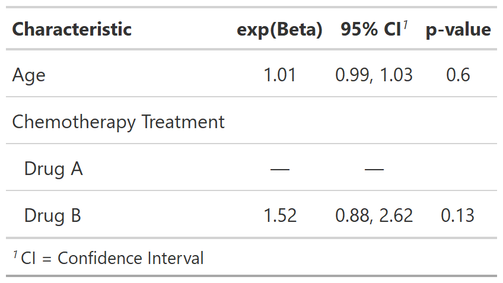
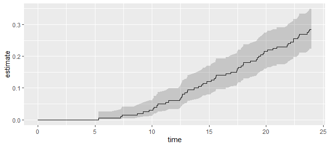

The tidycmprsk package provides an improved interface for working with the competing risk endpoints. The package wraps the cmprsk package, and exports functions for univariate cumulative incidence estimates with cuminc() and competing risk regression with crr().
The package also includes broom-style tidiers: tidy(), augment(), and glance().
Installation
You can install the dev version of tidycmprsk from GitHub
# install.packages("devtools")
devtools::install_github("MSKCC-Epi-Bio/tidycmprsk")Competing Risk Regression
Fit a Fine and Gray model for the example data trial with covariates age and trt.
library(tidycmprsk)
crr_mod <- crr(Surv(ttdeath, death_cr) ~ age + trt, trial)
#> 11 cases omitted due to missing values
crr_mod
#>
#> -- crr() -----------------------------------------------------------------------
#> * Call Surv(ttdeath, death_cr) ~ age + trt
#> * Failure type of interest "death from cancer"
#>
#> Variable HR SE 95% CI p-value
#> age 1.01 0.010 0.99, 1.03 0.56
#> trtDrug B 1.52 0.279 0.88, 2.62 0.13The tidycmprsk plays will with other packages, such as gtsummary.
tbl <-
crr_mod %>%
gtsummary::tbl_regression(exponentiate = TRUE)
Cumulative Incidence
cuminc(Surv(ttdeath, death_cr) ~ 1, trial)
#>
#> -- cuminc() --------------------------------------------------------------------
#> * Failure type "death from cancer"
#> time estimate std.error
#> 5.00 0.000 0.000
#> 10.0 0.030 0.012
#> 15.0 0.120 0.023
#> 20.0 0.215 0.029
#> * Failure type "death other causes"
#> time estimate std.error
#> 5.00 0.005 0.005
#> 10.0 0.025 0.011
#> 15.0 0.090 0.020
#> 20.0 0.205 0.029Plot risks using autoplot().
cuminc(Surv(ttdeath, death_cr) ~ trt, trial) %>%
autoplot(outcomes = "death from cancer", conf.int = TRUE)
Contributing
Please note that the {tidycmprsk} project is released with a Contributor Code of Conduct. By contributing to this project, you agree to abide by its terms. Thank you to all contributors!
@ddsjoberg, and @tengfei-emory
Limitations
The tidycmprsk package implements most features (and more) available in cmprsk. However, the time interaction features available in cmprsk::crr() have not yet been made available in tidycmprsk.